Creating a simple part with Draft and Part WB/es
Template:Información del tutorial
Introdución
Este tutorial pretende ser una primera introducción al Entorno de trabajo de dibujo Imagen: Switch_DraftWorkbench.JPG en FreeCAD. El tutorial utiliza una "forma 2D" para crear un "sólido 3D", lo cual se logra mediante el Entorno de trabajo de piezas. Se recomienda al lector que primero complete el tutorial complementario "Creating a simple part with Part WB", que crea el mismo modelo con una técnica diferente, a la vez que cubre más aspectos básicos de la interfaz de usuario de FreeCAD. Este tutorial presupone que el usuario está familiarizado con la interfaz de usuario y algunos flujos de trabajo disponibles en FreeCAD. El objetivo del tutorial no es necesariamente mostrar la forma más eficiente de usar el programa, sino más bien familiarizar al lector con las diferentes funcionalidades disponibles en FreeCAD, cómo usarlas y dónde encontrarlas.
{kind=link}
El Tutorial cubre
- El modelo a crear
- Creación del perfil 2D
- Por qué puede fallar la extrusión
- Extrusión del perfil
- Creación del orificio pasante
- Creación de un boceto a partir del perfil 2D
- Calidad de los modelos
- Conclusiones
El modelo a realizar
{kind=link}
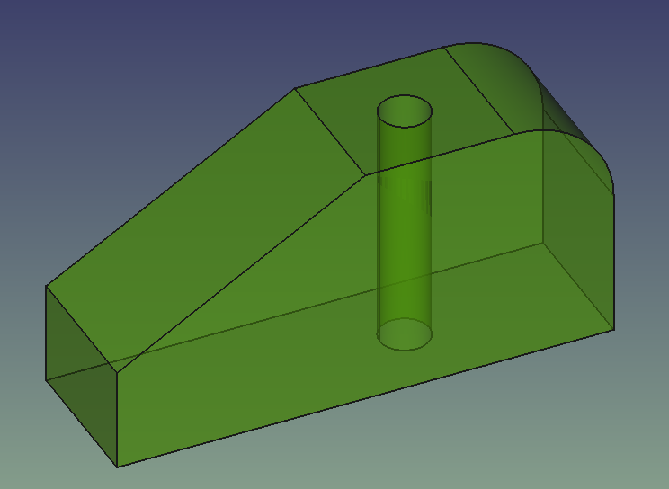
{kind=link}
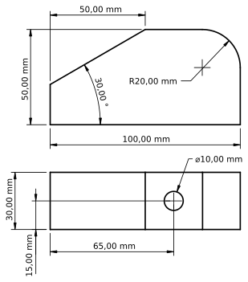
Creación del perfil 2D
Crea un nuevo documento y guárdalo directamente con un nuevo nombre. Cambia la vista a la vista  Top y cambia a la vista
Top y cambia a la vista  Draft Workbench, tu pantalla debería verse como la siguiente. Si la cuadrícula no se muestra, actívala o desactívala con Toggle Grid.
Draft Workbench, tu pantalla debería verse como la siguiente. Si la cuadrícula no se muestra, actívala o desactívala con Toggle Grid.
{kind=link}
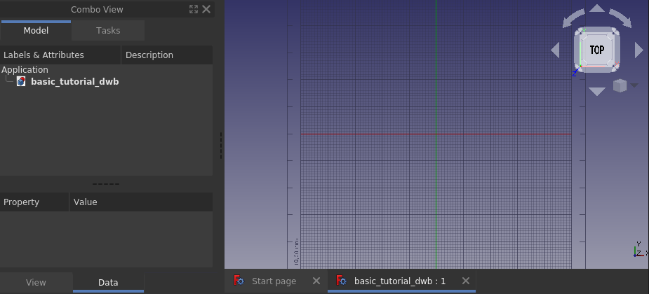
Para comenzar el perfil, dibuje un rectángulo aleatorio en el plano xy haciendo clic en dos puntos de la vista 3D que formen cualquier diagonal. Se abrirá un panel de tareas al ejecutar el comando; en este caso no lo utilizaremos, pero también puede introducir las coordenadas del rectángulo directamente. Ahora debería aparecer un rectángulo dibujado en la vista 3D, similar a la imagen que se muestra a continuación.
{kind=link}
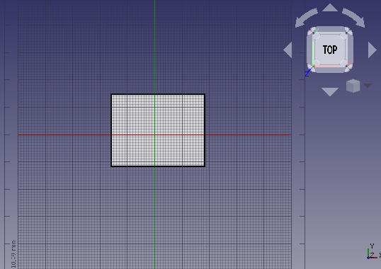
Cuando se trabaja en el Draft Workbench, casi siempre se dibuja en un plano 2D. Ese plano 2D se llama Plano de trabajo y, si se utilizan los ajustes predeterminados, siempre se alineará automáticamente con la vista 3D actual. Entonces, hasta que se complete el perfil 2D, es mejor simplemente mantener la vista superior (posición de la cámara) y no jugar con la rotación de la vista. Si lo cambió, simplemente vuelva a la vista superior antes de iniciar cualquier comando nuevo en Draft Workbench.
La vista lateral de nuestro modelo final tiene un contorno exterior de 100 x 50 mm, y sería conveniente que la esquina inferior izquierda se ubicara en la posición cero global. Esto se puede lograr mediante el editor de propiedades. Asegúrese de que el rectángulo creado esté seleccionado, luego cambie la posición del rectángulo a (0, 0, 0), modifique la altura a 50 mm y la longitud a 100 mm, como se muestra en las imágenes a continuación.
{kind=link}
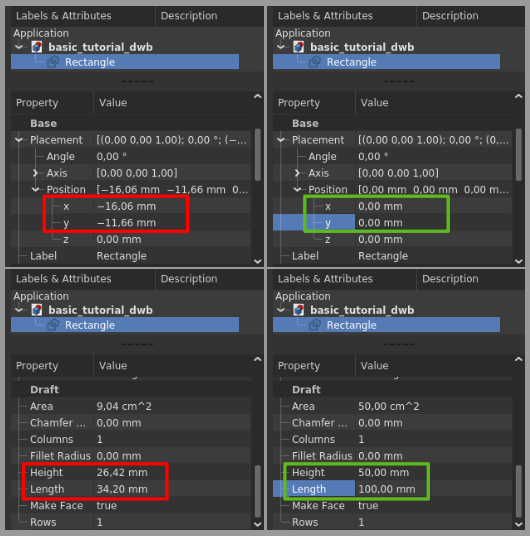
El Rectángulo está terminado y debería verse así después de aplicar  Ajustar todo a la vista.
Ajustar todo a la vista.
{kind=link}
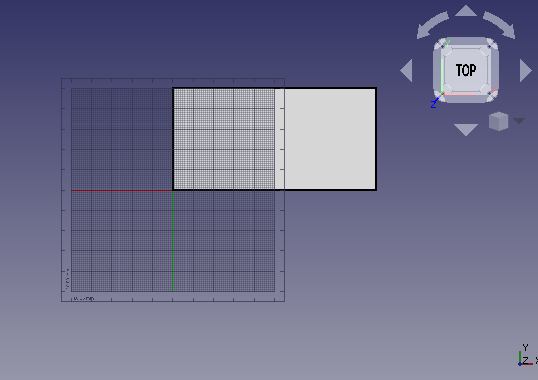
A continuación, dividiremos el rectángulo en sus cuatro aristas. Para ello, primero seleccionamos el Rectángulo y luego ejecutamos el comando  Draft Downgrade. La cara rellena desaparecerá y el objeto en la Vista de árbol se convertirá en un Cable en lugar de un Rectángulo, como se muestra en la imagen de la izquierda. Al ejecutar Draft Downgrade una vez más, el cable se dividirá en sus aristas, como se muestra en la imagen del medio.
Draft Downgrade. La cara rellena desaparecerá y el objeto en la Vista de árbol se convertirá en un Cable en lugar de un Rectángulo, como se muestra en la imagen de la izquierda. Al ejecutar Draft Downgrade una vez más, el cable se dividirá en sus aristas, como se muestra en la imagen del medio.
{kind=link}
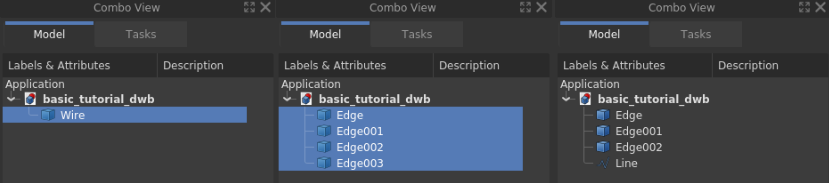
El observador notará que el icono del objeto en la Vista de árbol para el cable cambió a un "cuadro azul". Este cuadro azul es el icono utilizado para objetos geométricos genéricos (objetos geométricos de Part Workbench para ser específicos, pero eso es para lectores avanzados). Seleccione el borde vertical izquierdo e invoque el comando  Draft Upgrade, el antiguo "borde" ahora tendrá un icono diferente y ha cambiado la "etiqueta" a "Línea". Ahora es un objeto de "Draft Workbench" donde se puede editar, por ejemplo, el "punto de inicio" y el "punto final" a través del "Editor de propiedades", esto no es posible con los objetos "borde".
Draft Upgrade, el antiguo "borde" ahora tendrá un icono diferente y ha cambiado la "etiqueta" a "Línea". Ahora es un objeto de "Draft Workbench" donde se puede editar, por ejemplo, el "punto de inicio" y el "punto final" a través del "Editor de propiedades", esto no es posible con los objetos "borde".
Creación del filete
Comience seleccionando los bordes de la esquina superior derecha, use el menú Editar → Selección de cuadro  Selección de cuadro, mantenga presionado el
Selección de cuadro, mantenga presionado el  Botón izquierdo del ratón y arrastre de derecha a izquierda y suelte el LMB. Al arrastrar de derecha a izquierda, la selección resultante incluye todo lo que se encuentra total o parcialmente dentro del área de selección. Si se arrastra de izquierda a derecha, solo los objetos completamente encerrados por el área de selección se incluyen en la selección resultante. La selección real ocurre cuando se suelta el botón izquierdo del ratón, y no hay una vista previa de lo que se seleccionará.
Botón izquierdo del ratón y arrastre de derecha a izquierda y suelte el LMB. Al arrastrar de derecha a izquierda, la selección resultante incluye todo lo que se encuentra total o parcialmente dentro del área de selección. Si se arrastra de izquierda a derecha, solo los objetos completamente encerrados por el área de selección se incluyen en la selección resultante. La selección real ocurre cuando se suelta el botón izquierdo del ratón, y no hay una vista previa de lo que se seleccionará.
{kind=link}
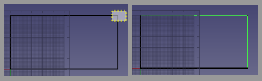
Con los bordes de la esquina superior derecha seleccionados, ejecute el comando  Fillet en el Entorno de trabajo de borrador. Marque Eliminar objetos originales y cambie el radio a 20 mm y pulse enter.
Fillet en el Entorno de trabajo de borrador. Marque Eliminar objetos originales y cambie el radio a 20 mm y pulse enter.
{kind=link}
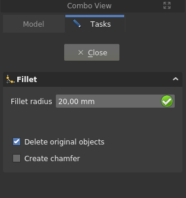
El Fillet se ha creado y su modelo ahora debería verse como se muestra a continuación.
{kind=link}
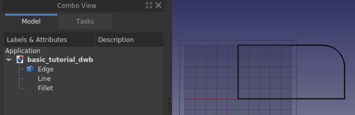
Crear el chaflán
Para realizar el chaflán necesitamos tener una línea con la inclinación correcta y además poder posicionarla correctamente. Comencemos con la posición, que está en la coordenada (50, 50, 0). En el perfil actual no tenemos ningún punto allí, así que creemos uno creando una "línea de ayuda temporal". Primero seleccione la Línea vertical izquierda, luego cree la línea de ayuda mediante  Selección duplicada en Editar → Selección duplicada, se crea Line001. Utilice el editor de propiedades y mueva Line001 50 mm en la dirección x utilizando la propiedad Colocación. Luego duplique el borde horizontal inferior y cambie el ángulo del borde a 30 grados, una vez más usando la propiedad Colocación. El modelo ahora debería verse como la imagen de abajo.
Selección duplicada en Editar → Selección duplicada, se crea Line001. Utilice el editor de propiedades y mueva Line001 50 mm en la dirección x utilizando la propiedad Colocación. Luego duplique el borde horizontal inferior y cambie el ángulo del borde a 30 grados, una vez más usando la propiedad Colocación. El modelo ahora debería verse como la imagen de abajo.
{kind=link}
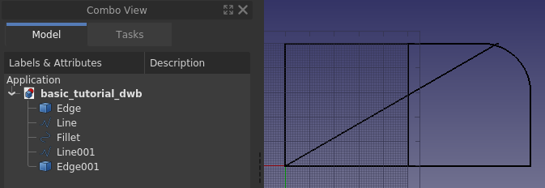
A continuación, coloque la «línea angular» en su posición. Para ello, utilizamos  Draft Move junto con la funcionalidad de «ajuste» en el Entorno de trabajo de borrador, más concretamente el ajuste de «punto final». Primero, asegúrese de que su barra de herramientas de ajuste se vea similar a la siguiente.
Draft Move junto con la funcionalidad de «ajuste» en el Entorno de trabajo de borrador, más concretamente el ajuste de «punto final». Primero, asegúrese de que su barra de herramientas de ajuste se vea similar a la siguiente.
{kind=link}
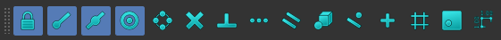
A continuación, seleccione la "línea en ángulo", Edge001, pulse Mover y se abrirá un panel de tareas.
{kind=link}
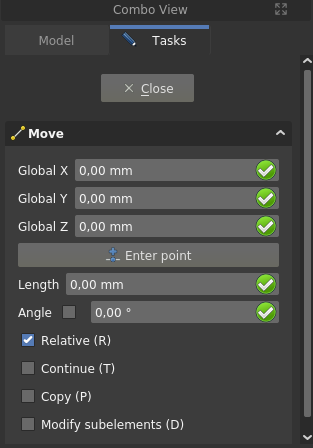
Asegúrese de que la casilla "Copiar" esté desactivada. Pase el ratón por encima del cuarto superior de la línea en ángulo. Cuando aparezca el punto blanco en el lugar correcto y se muestre el símbolo del punto final, haga clic en el botón izquierdo del ratón (LMB). Mueva el ratón al cuarto superior de la línea de ayuda. Cuando aparezcan el punto blanco y el símbolo del punto final, haga clic en el botón izquierdo del ratón (LMB). La secuencia se ilustra a continuación.
{kind=link}
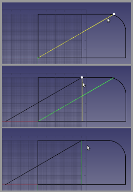
La línea ahora está en la posición correcta, pero es demasiado larga. Para ajustar la longitud se utilizará  Draft Trimex. Seleccione la línea angular, Edge001, presione Recortar y luego haga clic en la parte inferior de la línea vertical más a la izquierda, Line, para usarla como borde de corte. La proyección del punto donde se selecciona el borde de corte sobre el borde que se va a cortar, determina el resultado. Si selecciona la línea vertical más a la izquierda cerca de su extremo superior, se recortará la parte incorrecta de la línea angular. La imagen a continuación muestra el comando Recortar invocado, la línea vertical preseleccionada y el cursor sobre el extremo incorrecto de esa línea. Si mira con atención, puede ver la vista previa del resultado.
Draft Trimex. Seleccione la línea angular, Edge001, presione Recortar y luego haga clic en la parte inferior de la línea vertical más a la izquierda, Line, para usarla como borde de corte. La proyección del punto donde se selecciona el borde de corte sobre el borde que se va a cortar, determina el resultado. Si selecciona la línea vertical más a la izquierda cerca de su extremo superior, se recortará la parte incorrecta de la línea angular. La imagen a continuación muestra el comando Recortar invocado, la línea vertical preseleccionada y el cursor sobre el extremo incorrecto de esa línea. Si mira con atención, puede ver la vista previa del resultado.
{kind=link}
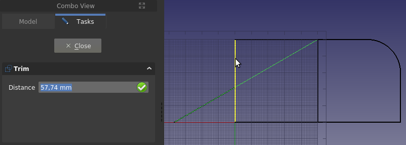
También recorta la línea vertical más a la izquierda para formar la esquina inferior del chaflán. Selecciona la "línea angular", Edge001, cerca de su extremo superior derecho para obtener un resultado correcto. Si cometes un error al recortar, simplemente usa  Deshacer y
Deshacer y  Actualizar (esta última a menudo llamada "recalcular") e inténtalo de nuevo.
Actualizar (esta última a menudo llamada "recalcular") e inténtalo de nuevo.
{kind=link}
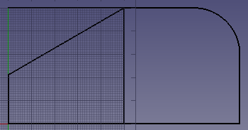
Para recortar el borde horizontal superior, es necesario degradar el redondeo para que el borde superior sea un objeto independiente en la vista de árbol. Si intenta recortarlo sin haberlo degradado previamente, la función de recorte intentará recortar el arco del redondeo. Dado que el borde de recorte, la línea vertical central, es perpendicular al borde que se va a recortar, no puede controlar el resultado del recorte seleccionando un punto exacto en dicho borde. En este caso, debe invertir la solución predeterminada manteniendo pulsada la tecla Alt mientras selecciona el borde de corte.
El perfil está listo y se muestra a continuación con los bordes organizados en un  Group llamado Perfil (o etiquetado para ser precisos en la jerga de FreeCAD), junto con la línea de ayuda eliminada. Los grupos se pueden usar para organizar las características en sus documentos de FreeCAD, su uso es similar a una estructura de carpetas en el sistema de archivos de una computadora. Para mover elementos dentro y fuera del grupo, use arrastrar y soltar en la Vista de árbol.
Group llamado Perfil (o etiquetado para ser precisos en la jerga de FreeCAD), junto con la línea de ayuda eliminada. Los grupos se pueden usar para organizar las características en sus documentos de FreeCAD, su uso es similar a una estructura de carpetas en el sistema de archivos de una computadora. Para mover elementos dentro y fuera del grupo, use arrastrar y soltar en la Vista de árbol.
{kind=link}
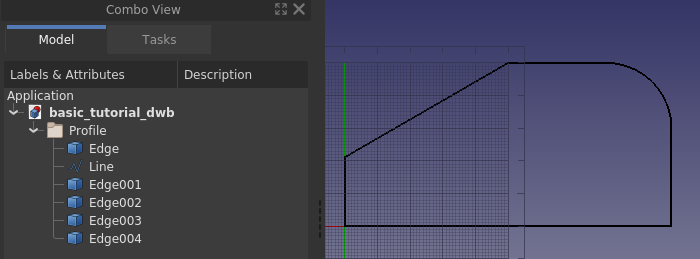
¿Por qué puede fallar la extrusión?
Guarda el documento. En este párrafo vamos a experimentar y queremos poder volver al modelo actual.
Vamos a empezar: selecciona todos los bordes y la línea en el grupo Perfil, y en el  Part Workbench invoca el comando
Part Workbench invoca el comando  Extrude. Se abrirá un panel de tareas, acepta todas las opciones predeterminadas y haz clic en OK.
Extrude. Se abrirá un panel de tareas, acepta todas las opciones predeterminadas y haz clic en OK.
{kind=link}
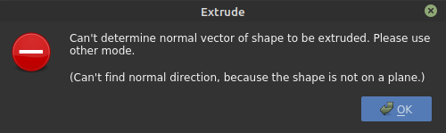
Eso no funcionó, pero parece bastante fácil corregir el error; solo necesitamos especificar una dirección. Haz clic en OK para volver al panel de tareas y selecciona "dirección personalizada".
{kind=link}
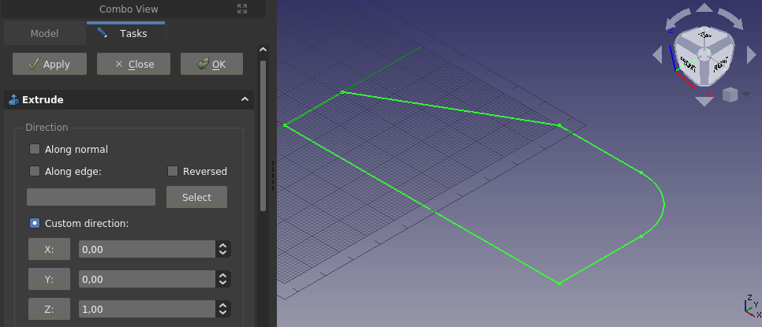
Acepte el eje z predeterminado y vuelva a hacer clic en OK.
{kind=link}
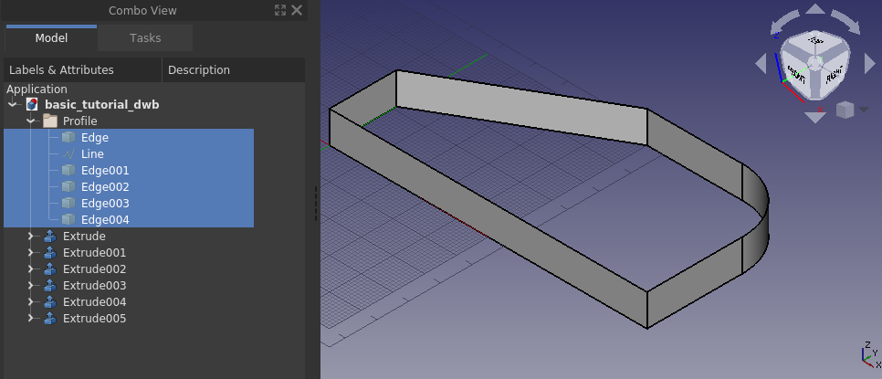
Hemos conseguido crear una estructura parecida a una valla; a juzgar por la vista de árbol, cada borde se trata por separado. No es el sólido relleno que buscamos. Pulsa Deshacer y probemos otra cosa.
Desplácese hasta el final del panel de tareas Extruir donde encontrará la opción Crear sólido, marque esa opción y haga clic en OK.
{kind=link}
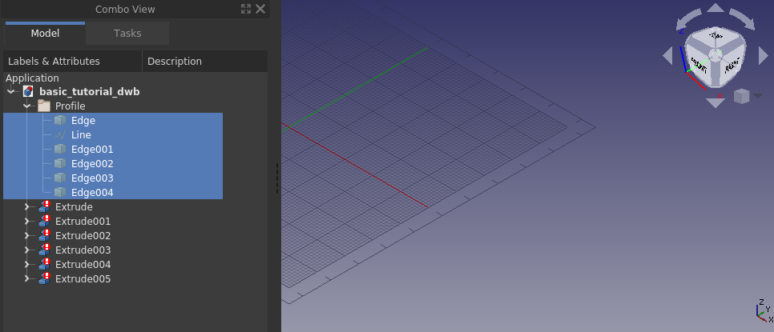
Everything disappeared, clearly that did not work either. Let’s go through why none of these ways are working. In the first case we got an error that the direction could not be determined. A flat face has a normal, i.e. direction, a line does not. Since from our second attempt we know that it worked when providing a direction, the error simply comes from trying to extrude a line without knowing a direction. The observant will say that an arc has a normal (direction), this is true. If you select only the edge that is the arc, FreeCAD will extrude it, also with default settings.
En el segundo caso funcionó, pero también obtuvimos una extrusión para cada arista que teníamos en nuestra selección. Sin embargo, las características resultantes no son las que queremos, es decir, un sólido.
In the third case we checked Create solid, and ended up with everything disappearing. The objects in the Tree View have a different icon as well, there is a white exclamation mark on a red background, that particular overlay icon means that the object has an error that has to be tended to. One can read up on the different types of overlay icons on the wiki.
Hovering over any of the Tree View objects with the overlay icon a tool tip is displayed, it says Wire is not closed.
{kind=link}
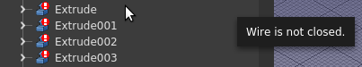
In our case the error is not fixable. It is geometrically impossible to create a solid out of an extruded single line. An extruded line simply becomes a sheet, or shell in FreeCAD lingo. In other words, this is not a FreeCAD limitation, it is a fundamental outcome of geometrical theory. The reason why the 3D view goes completely blank is that the created features, or objects in the Tree View, have errors in the produced shape, and thus contain nothing to render. FreeCAD does however create the new document objects (in this case extrusions) and thus hides any geometry/object used for making the new document objects. That is why the screen goes blank when trying to make a solid out of a line, or lines.
The tool tip says it all, in order to extrude into a solid one needs a closed wire, or a face. A face is, per definition, simply a closed wire that is filled. One way to create a closed wire out of our profile edges is to select them all and apply  Draft Upgrade. If applied once it becomes a wire, while at the same time it consumes the individual edges from the Tree View. If applied twice it becomes a face, either of those allows for a successful solid extrusion.
Draft Upgrade. If applied once it becomes a wire, while at the same time it consumes the individual edges from the Tree View. If applied twice it becomes a face, either of those allows for a successful solid extrusion.
Before going on to the next paragraph: open the previous version of the document.
Extruding the profile
Another way to create the closed wire is with the  Shape builder command from the Part Workbench, which allows for making a wire without consuming the individual edges. Part Shape builder is a powerful tool to create any geometric entity in FreeCAD that can be used further to create complex solids, the simplest example is creating a line between two vertices. Click Part Shape builder to bring up the task panel.
Shape builder command from the Part Workbench, which allows for making a wire without consuming the individual edges. Part Shape builder is a powerful tool to create any geometric entity in FreeCAD that can be used further to create complex solids, the simplest example is creating a line between two vertices. Click Part Shape builder to bring up the task panel.
{kind=link}
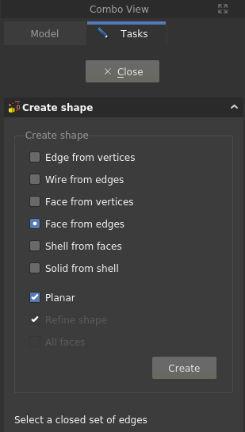
We can use either Wire from edges or Face from edges. Multiple selections have to be made with the Ctrl key pressed down. Let’s use Face from edges, once that option is selected one can also select Planar, do that as well. Then select all edges in the profile, the order does not matter (in this case) and click Create, and then Close to come back to the Tree View. The face has been created.
{kind=link}
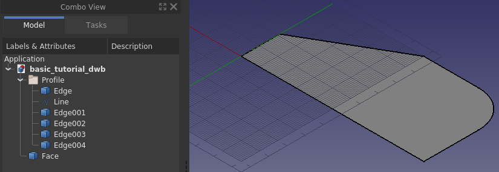
Select the Face and invoke Part Extrude, set the extrusion length to 30 mm and click OK.
{kind=link}
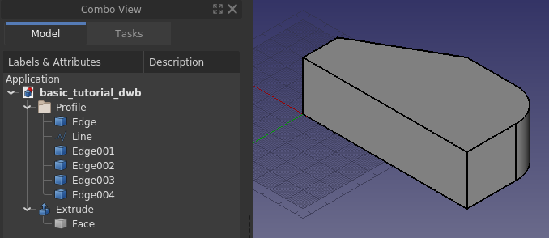
Creating the through hole
To make the through hole we need a cylinder correctly positioned to make a boolean cut with.
Create a cylinder, and position it correctly. In this case the radius is 5 mm, the height is set to 60 mm. For the placement, first it is rotated -90 degrees around the x-axis, then positioned at (65, -5, 15). The negative 5 in the y-direction is because the height is 10 mm longer than needed.
{kind=link}
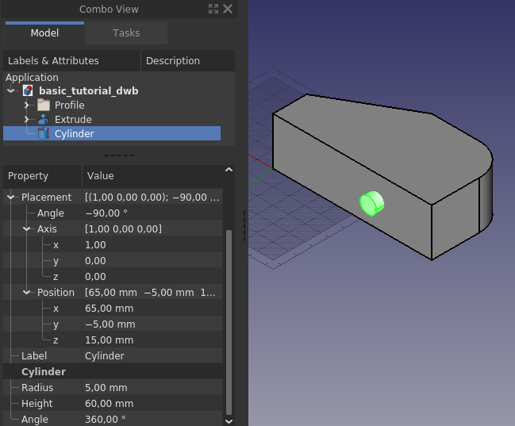
It does not hurt to make the height of the cylinder longer than needed. For a simple model like this it will not matter if the cylinder is the exact height of the profile. It is however good practice to avoid co-planar faces to prevent numerical errors in the geometric kernel that can sometimes result in strange effects, or failures in subsequent operations.
With a final boolean cut, and after changing the appearance of the resulting object, the model is completed.
{kind=link}
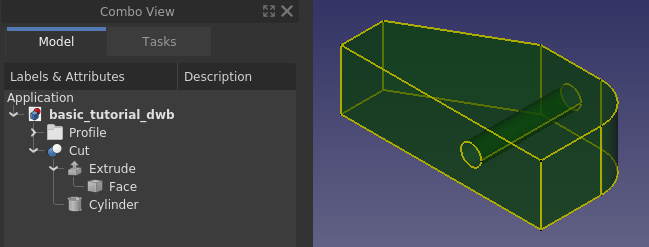
Making a sketch out of the 2D profile
Using the Draft Workbench is one way of creating a 2D profile. In the Draft Workbench a wire can be made in 3D space. FreeCAD provides another tool to make 2D profiles – the  Sketcher Workbench. Using a sketch is a more versatile way to create a 2D profile. Any 2D profile made in the Draft Workbench can be converted to an unconstrained sketch.
Sketcher Workbench. Using a sketch is a more versatile way to create a 2D profile. Any 2D profile made in the Draft Workbench can be converted to an unconstrained sketch.
Start by hiding the Cut feature and make the edges and the line in the profile visible. Select the edges and the line and from the Draft Workbench press the toolbar button  Draft to Sketch. You should see the same as in the image below.
Draft to Sketch. You should see the same as in the image below.
{kind=link}
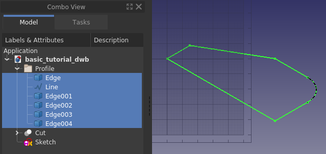
Next, hide the original edges and double-click the Sketch object in the Tree View, bringing you to the following state, i.e. the Sketcher task panel opened.
{kind=link}
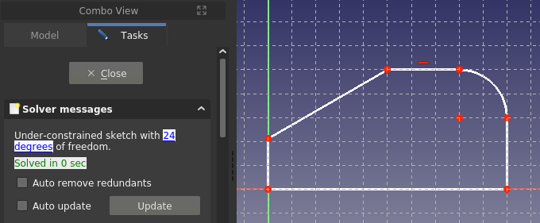
This is how it looks when one edits a sketch. Since this is not a tutorial for using the Sketcher just go ahead and close it. If you want an introduction to sketching, which is a core workflow in any 3D parametric CAD, please follow the sister tutorial Creating a simple part with PartDesign.
With the Sketch closed and selected, from the Part Workbench use Extrude in the same way as before. The basic block of the simple model is ready once again.
{kind=link}
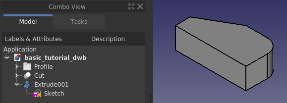
Quality of models
Sooner or later when working with 3D parametric CAD you will come across a broken model, either one you have made yourself, or a model that you have imported. A broken model can work for its purpose, but more often than not, there are subsequent operations that simply will not work. To repair a broken model one has to know what to repair, this is where the built-in quality check tools in FreeCAD come in.
First let us check the quality of the recently created Extrude001. With the Part Workbench active, first select Extrude001 and then use the command  Check geometry. Check all settings checkboxes except the top one, and click the Run check button.
Check geometry. Check all settings checkboxes except the top one, and click the Run check button.
{kind=link}
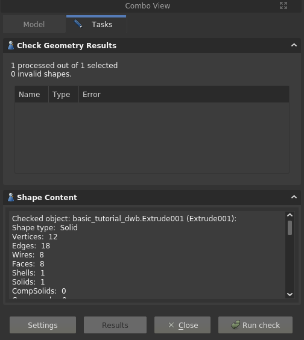
Our model is OK, no errors are reported. There is also a listing of the models content, or in FreeCAD lingo, the content of the shape, i.e. how it is put together from ground up. Here one can see that apparently to make a solid one also needs a shell, and the shell is made out of faces, and so on. In other words, you can create any solid by simply starting out by making points, or vertices, from those one makes edges, and from those one creates wires, and out of the wires one makes faces which are then stitched into a shell, from which one finally arrives at a solid. A solid can only be made from a watertight shell. A not watertight shell is a common source of troublesome CAD models, it can for example happen with imported geometry created in a different software, especially when using the commonly available neutral file formats.
Another check one can do is related to the Sketch. Close the task panel for the geometry check. Select the Sketch, expand Extrude001 in the Tree View if needed in order to see the sketch object. Switch to the  Sketcher Workbench, use the command
Sketcher Workbench, use the command  Validate sketch, a task panel opens. In the task panel, click the Find button for Missing coincidences. It highlights and reports 6 of them, i.e. all the points where the edges meet.
Validate sketch, a task panel opens. In the task panel, click the Find button for Missing coincidences. It highlights and reports 6 of them, i.e. all the points where the edges meet.
{kind=link}
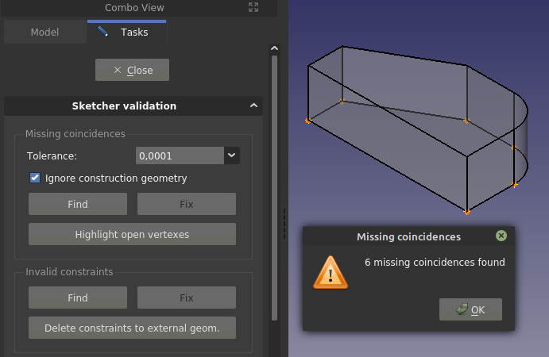
Click OK in the pop-up dialog and then click the Fix button to heal the Missing coincidences. If you close the task panel, and go into edit mode of the Sketch, it reports 12 degrees of freedom, as opposed to the earlier 24. That was achieved through adding coincident constraints to the endpoints of the edges.
The observant reader notices that when using edges from Draft those had to be joined into a closed wire to make a solid extrusion, whereas in Sketcher that was apparently not needed. The logic here is that the sketch is one object, and the extrusion of one object is treated as if it was a closed wire (in this case).
Finally it should be pointed out that, although creating subsequent objects from sketches with open vertices can work, it is best practice to not have any, as well as to have a fully constrained sketch (as opposed to an under-constrained sketch). The reason why it works here is that the sketch is created from a Draft profile constructed in such a way that the endpoints of the edges match without any gaps. If you draw by hand in a sketch, and also try to match endpoints by hand, it is virtually guaranteed that endpoints will not match, i.e. the gaps (although not really visible on the screen) will be large enough that the geometric kernel cannot consider the edges to be geometrically joined.
Wrapping up
Having gone through the tutorial you have become somewhat familiar with the basic functionality of FreeCAD, along with the core workbenches Part and Draft. You are also aware of the existence of the Sketcher Workbench, which for many experienced users is the sole tool used to create 2D profiles later utilized in solid feature operations. The use of sketches is a core concept in the PartDesign Workbench. It is suggested that you learn sketches and PartDesign Workbench next if your focus is on creating solids. The sister-tutorial Creating a simple part with PartDesign makes the same model as this tutorial. If your focus is modeling buildings your next learning should be the Draft and Arch workbenches.
At last, FreeCAD is made by volunteers in their spare time. If you want to further advance FreeCAD’s capabilities, consider contributing to FreeCAD, for example by improving the documentation.